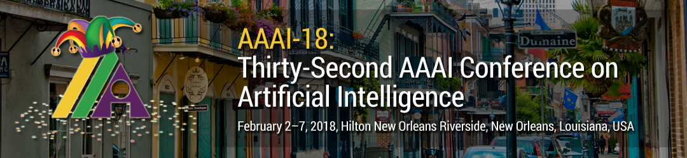
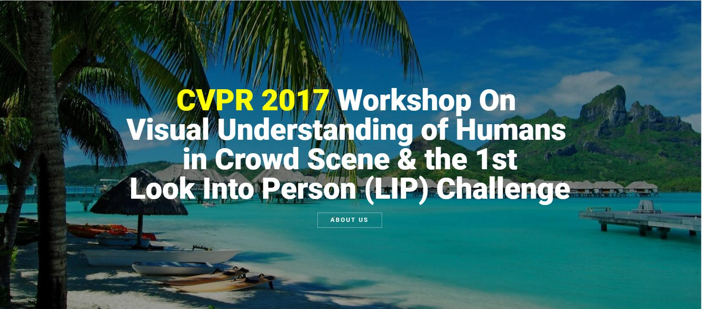
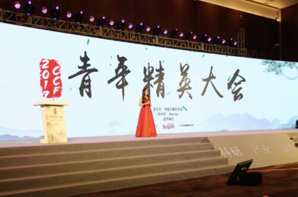
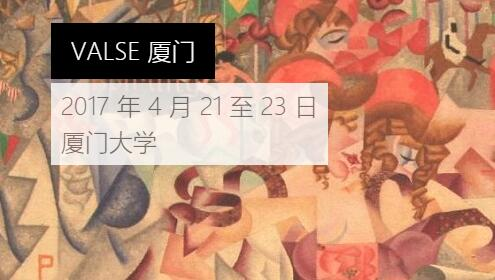
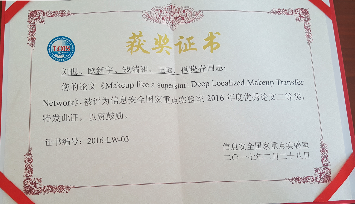

What's New in S-Lab
- 
• A cross-domain adaptation paper is accepted by AAAI 2018
• 1篇有关跨域迁移学习的长文被AAAI 2018 接收
[2017-11-28]
Si Liu, Yao Sun, Defa Zhu, Guanghui Ren, Yu Chen, Jiashi Feng, and Jizhong Han, Cross-domain Human Parsing via Adversarial Feature and Label Adaptation, AAAI 2018 [Full paper]
-

• Three full papers and two demo papers are accepted by ACM MM 2017
• 3篇长文和2篇demo论文被ACM MM 2017 接收
[2017-07-09]
1. Si Liu, Yao Sun, Wei Wang, Renda Bao, Defa Zhu, Xiangbo Zhu, and Shuicheng Yan, Face Aging with Contextual Generative Adversarial Nets, ACM MM 2017[Full paper]
2. Bingke Zhu, Yingying Chen, Si Liu, Bo Zhang, Jinqiao Wang and Ming Tang， Fast Deep Matting for Portrait Animation on Mobile Phone， ACM MM 2017
3. Ting Liu, Yunchao Wei, Yao Zhao, Si Liu and Shikui Wei，Magic-wall: Visualizing Room Decoration， ACM MM 2017
4. Han Yu, Guanghui Ren, Ruihe Qian, Yao Sun, Changhu Wang, Hanqing Lu and Si Liu, RSVP: A Real-Time Surveillance Video Parsing System with Single Frame Supervision， ACM MM 2017[Demo paper].[Details]
5. Lejian Ren, Si Liu, Yao Sun, JianDong, Luoqi Liu and Shuicheng Yan, Time Traveler: a real-time face aging system， ACM MM 2017[Demo paper]
- 
• S-Lab Achieved NO. 1 on CVPR 2017 Visual Understanding of Humans in Crowd Scene & the 1st Look into Person (LIP) Challenge Human Parsing Task!
• S-Lab 获得CVPR 2017 Visual Understanding of Humans in Crowd Scene & the 1st Look into Person (LIP) 竞赛人物分割单元冠军
[2017-06-04]
The S-lab members (Lejian Ren, Renda Bao, Yao San, Si Liu) achieved the top 1 performance on the CVPR 2017 Visual Understanding of Humans in Crowd Scene & the 1st Look into Person (LIP) Challenge Human Parsing and Pose Task! This project is collaborated with Beijing Samsung Telecom R&D Center.
-

•Two papers about semantic segmentation are accepted by CVPR 2017
•2篇语义分割论文被CVPR 2017 接收
- 
• Prof. Liu took part in the 2017 CCF Young Elite Forum and is selected to give a talk in CNCC 2017.
• 刘偲老师参加2017 CCF青年精英大会 (http://www.ccf.org.cn/hdhy/qnjydh/) ， 并被推选赴2017中国计算机大会(CNCC)进行演讲
[2017-05-20]
On May 20th ，Prof. Liu took part in the 2017 CCF Young Elite Forum organized by China Computer Federation (CCF) in China National Convention Center. She introduced her recent work on “pixelwise image semantic understanding” . She was selected to give a talk in the China National Computer Congress, 2017 on Oct 26th - 28th .
- 
• S-lab members took part in the valse 2017 conference
• s-lab 成员参加Valse 2017
[2017-04-23]
Han Yu, Guanghui Ren and Si Liu took part in the valse 2017. They introduced their CVPR 2017 work and showed a real demo about human parsing in the surveillance video.
- 
• The automatic makeup paper is selected as the best paper runner up of the State Key Lab of Information Security 2016.
• S-Lab自动上妆工作获得信息安全国家重点实验室2016年度最佳论文二等奖
[2017-02-28]
The work of Xinyu Ou, Ruihe Qian and Si Liu 《 Makeup like a superstar: Deep Localized Makeup Transfer Network》 which is published in IJCAI 2016 has received the best paper runner up award of SKLOIS 2016.
-
• S-lab receives the special prize of BigData & Computing Intelligence Contest
• S-LAB团队夺得2016CCF大数据与计算智能大赛综合特等奖
[2016-12-25]
On Dec. 25th , the S-Lab members (Renda Bao, Guanghui Ren, Defa Zhu) take part in the fine-grained pedestrian recognition in surveillance images task. They beat all the 6500 teams and got the special prize of the BigData & Computing Intelligence Contest.


{kind=link}
{kind=link}
{kind=link}
{kind=link}
{kind=link}
{kind=link}